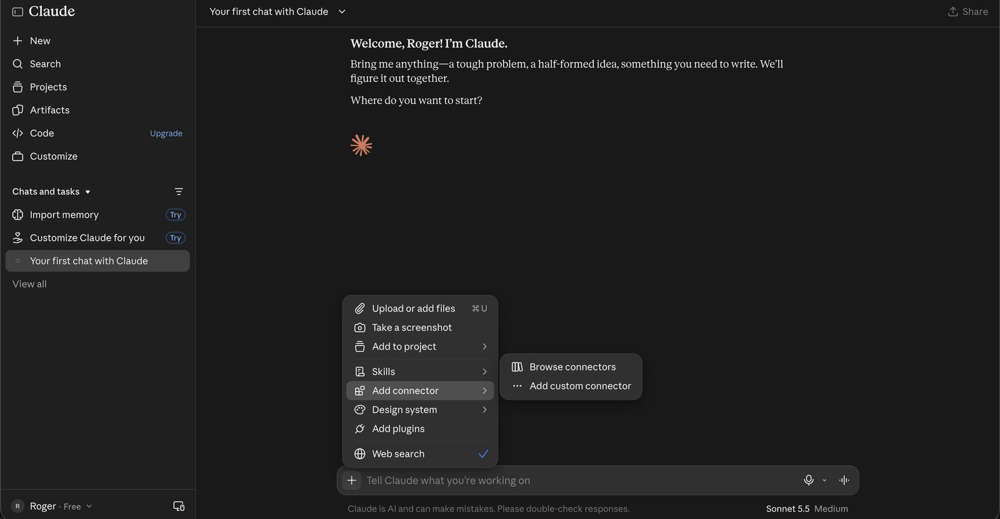
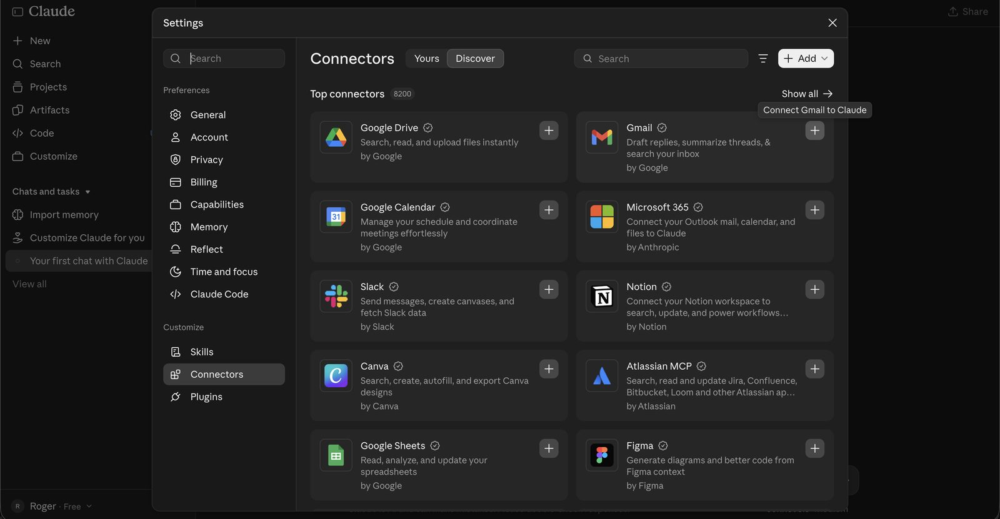
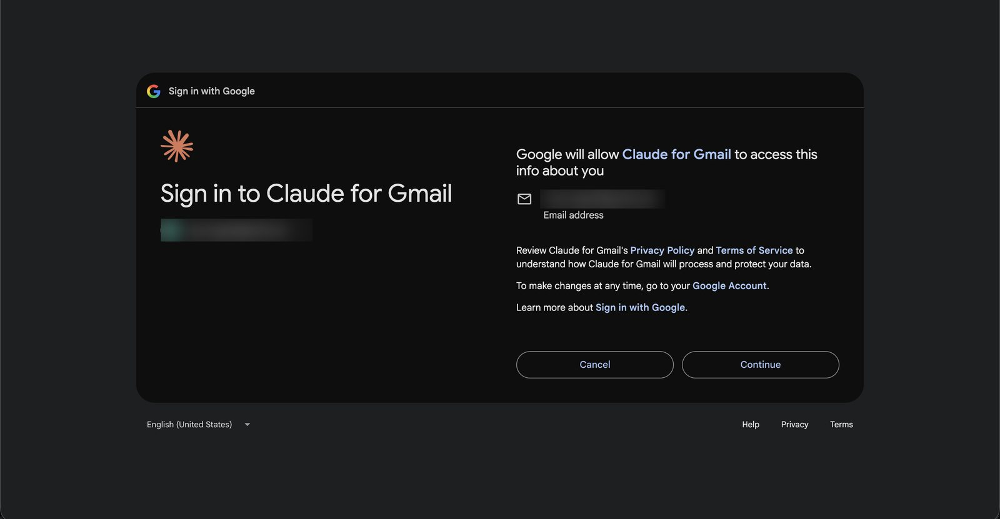
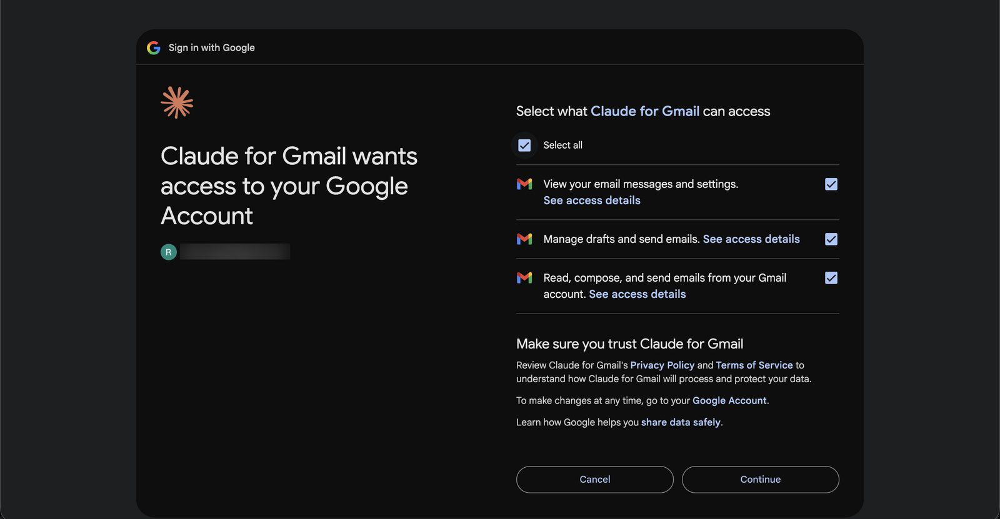
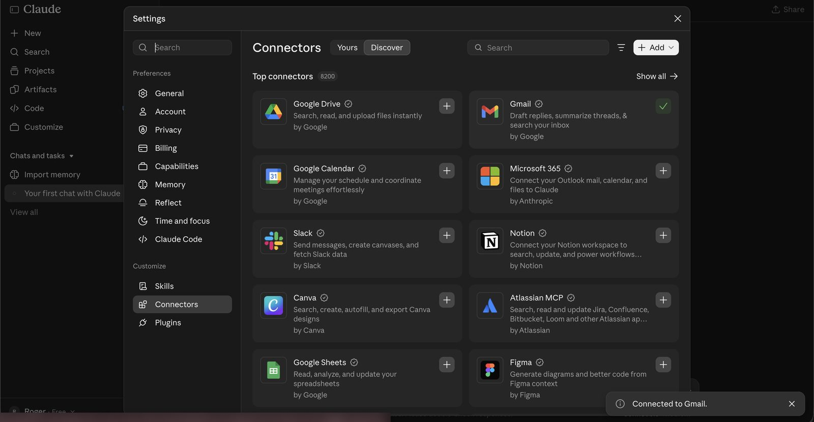
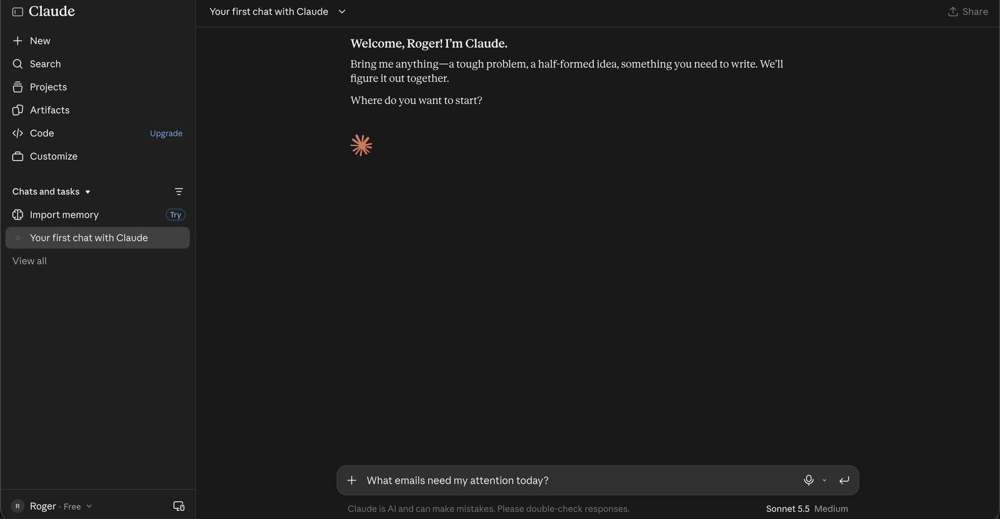
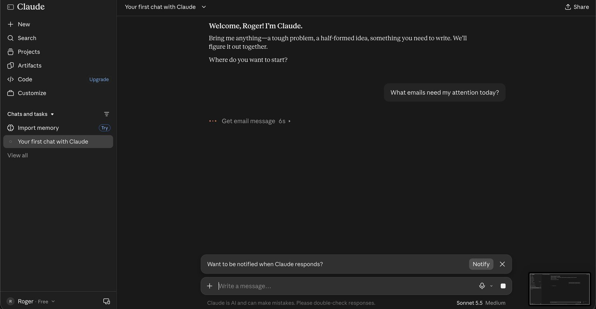
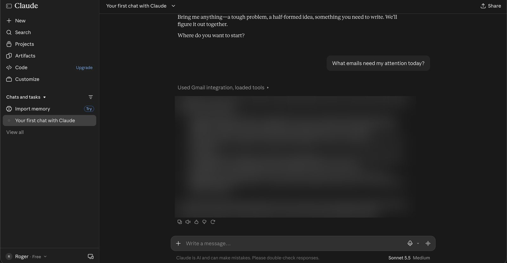

Connect Gmail to Claude in a few clicks, then ask in plain English. No code, and it works on the free Claude plan.
It sits at the left of the message box. Pick Add connector, then Browse connectors.

Gmail is in the top connectors list, described as "Draft replies, summarize threads, & search your inbox."

Google asks you to confirm which account to use. Pick the Gmail you want Claude to read.

Google lists three permissions: view your email and settings, manage drafts and send emails, and read, compose and send emails. Read them before you press Continue.

Heads up: these permissions include sending email, and we tested it: Claude can send, not just draft. Claude's help page says it asks for your approval before each send by default, but read every draft before you let it go. You can remove access any time from your Google Account.
A green tick appears on the Gmail card and a message pops up at the bottom right.

Close the settings, type the question below into a chat, and press enter. Claude shows "Loading tools" for a few seconds while it opens your inbox.
What emails need my attention today?

Claude lists what it found and what looks routine. Our reply is blurred because it showed real emails.

Good to know: in our test Claude only looked at unread inbox mail from the last two days, and it told us so. A quiet inbox gives a quiet answer. Ask it to look further back.
TESTEDClaude suggested these itself after our first question:
Look further back, the last two weeks.Check my starred and important emails.TESTEDThese work too. Claude can search your past email, and it can write a reply and save it as a draft in Gmail for you to review:
Find the last email from [name] and tell me what it says.Draft a reply to [name] saying I'll get back to them Friday.Drafts stay drafts: in our test Claude saved the reply as a draft in Gmail. Nothing was sent. Open it, read it, edit it, and send it yourself when you are happy.